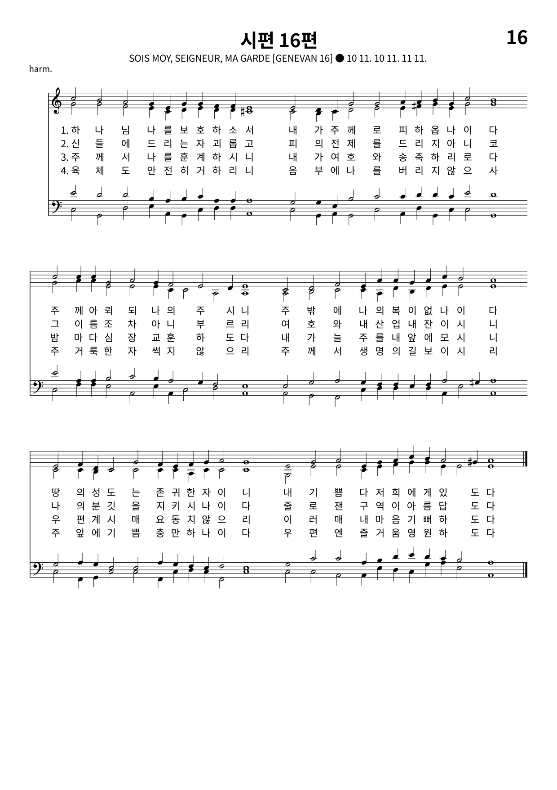

Psalm 16
SOIS MOY, SEIGNEUR, MA GARDE [GENEVAN 16] · 10 11. 10 11. 11 11.
English title: Preserve Me, God, I Put My Trust in Thee
Tune: · Harmony: · Lyrics: Korean adaptation of Psalm 16 from the Korean Revised Version (AI draft adaptation · not yet theologically reviewed) · 4 stanzas
Score PDF MusicXML (for printing) MusicXML (for accompaniment, with prelude and repeats) Read Psalm 16 (Korean Revised Version)
Score
← Psalm 15 ListAccompaniment (in preparation)Psalm 17 →
Lyrics (Korean)
Stanza 1 (Ps. 1~3절)
하나님 나를 보호하소서
내가 주께로 피하옵나이다
주께 아뢰되 나의 주시니
주 밖에 나의 복이 없나이다
땅의 성도는 존귀한 자이니
내 기쁨 다 저희에게 있도다
하나님 나를 보호하소서
내가 주께로 피하옵나이다
주께 아뢰되 나의 주시니
주 밖에 나의 복이 없나이다
땅의 성도는 존귀한 자이니
내 기쁨 다 저희에게 있도다
Stanza 2 (Ps. 4~6절)
신들에 드리는 자 괴롭고
피의 전제를 드리지 아니코
그 이름조차 아니 부르리
여호와 내 산업 내 잔이시니
나의 분깃을 지키시나이다
줄로 잰 구역이 아름답도다
신들에 드리는 자 괴롭고
피의 전제를 드리지 아니코
그 이름조차 아니 부르리
여호와 내 산업 내 잔이시니
나의 분깃을 지키시나이다
줄로 잰 구역이 아름답도다
Stanza 3 (Ps. 7~9절 앞)
주께서 나를 훈계하시니
내가 여호와 송축하리로다
밤마다 심장 교훈하도다
내가 늘 주를 내 앞에 모시니
우편 계시매 요동치 않으리
이러매 내 마음 기뻐하도다
주께서 나를 훈계하시니
내가 여호와 송축하리로다
밤마다 심장 교훈하도다
내가 늘 주를 내 앞에 모시니
우편 계시매 요동치 않으리
이러매 내 마음 기뻐하도다
Stanza 4 (Ps. 9절 뒤~11절)
육체도 안전히 거하리니
음부에 나를 버리지 않으사
주 거룩한 자 썩지 않으리
주께서 생명의 길 보이시리
주 앞에 기쁨 충만하나이다
우편엔 즐거움 영원하도다
육체도 안전히 거하리니
음부에 나를 버리지 않으사
주 거룩한 자 썩지 않으리
주께서 생명의 길 보이시리
주 앞에 기쁨 충만하나이다
우편엔 즐거움 영원하도다